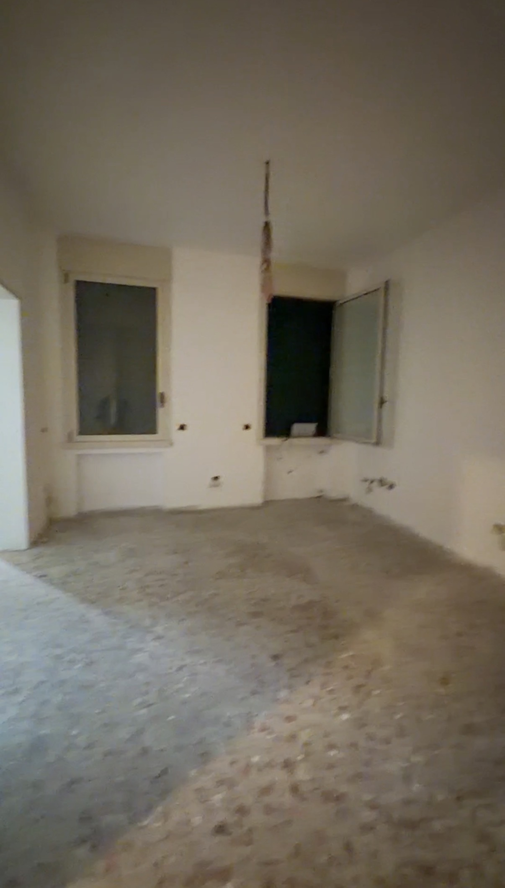
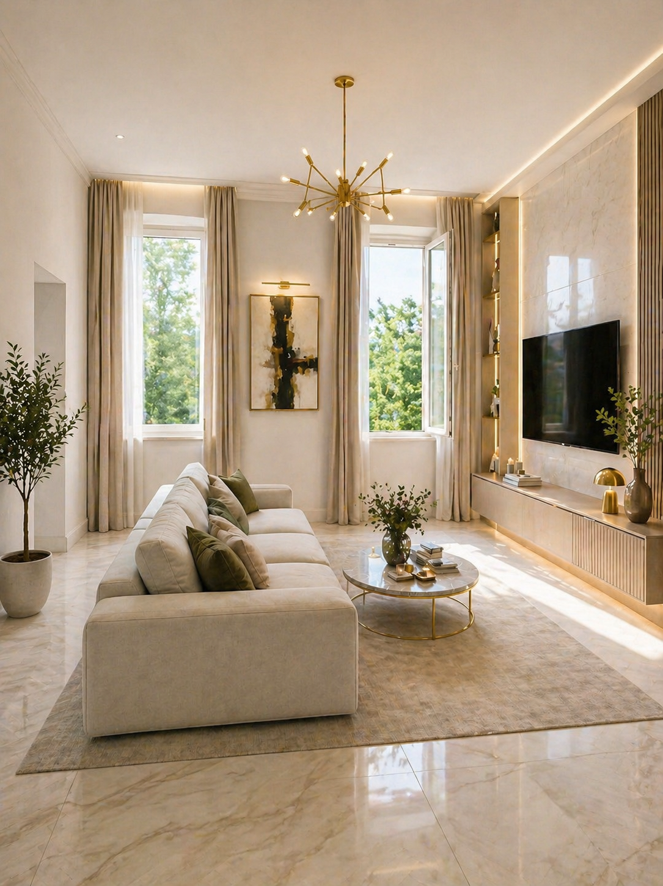
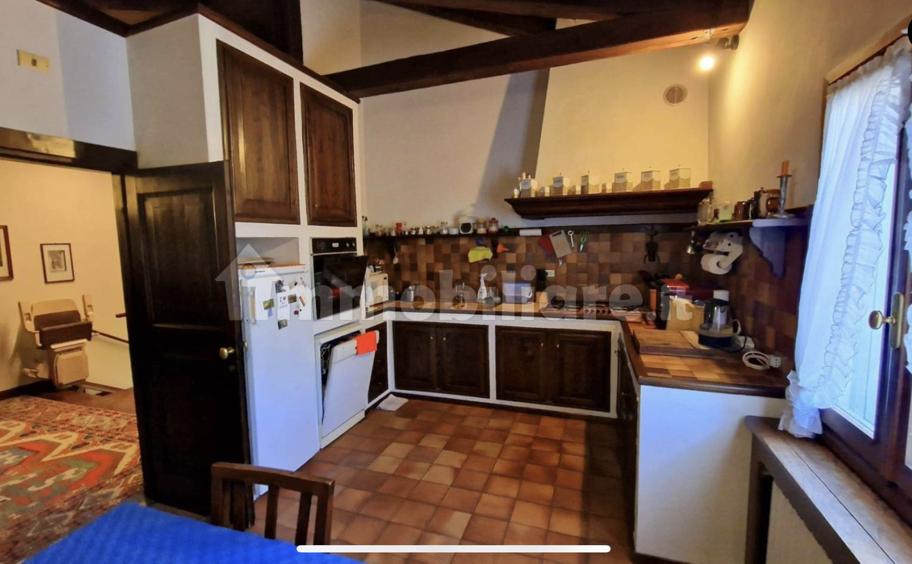
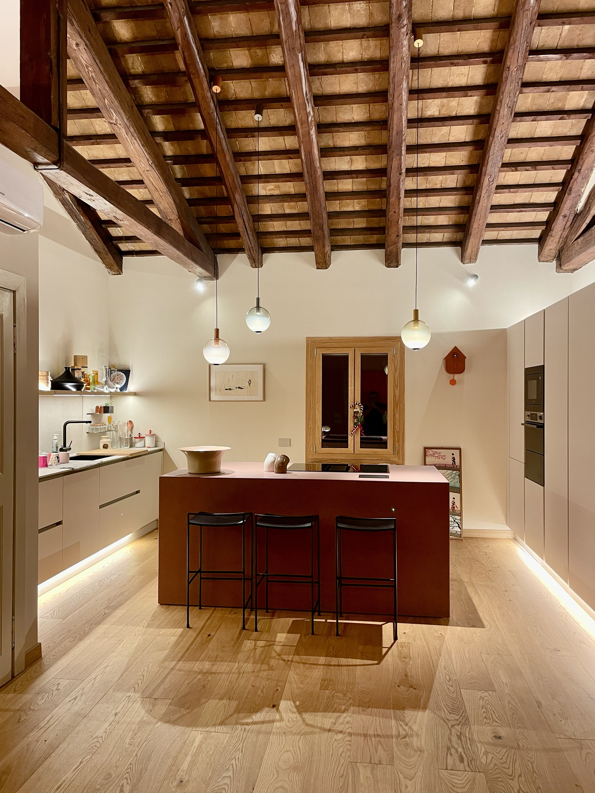
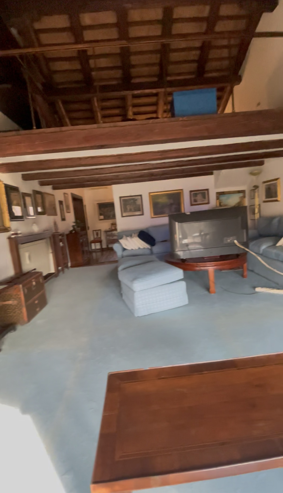
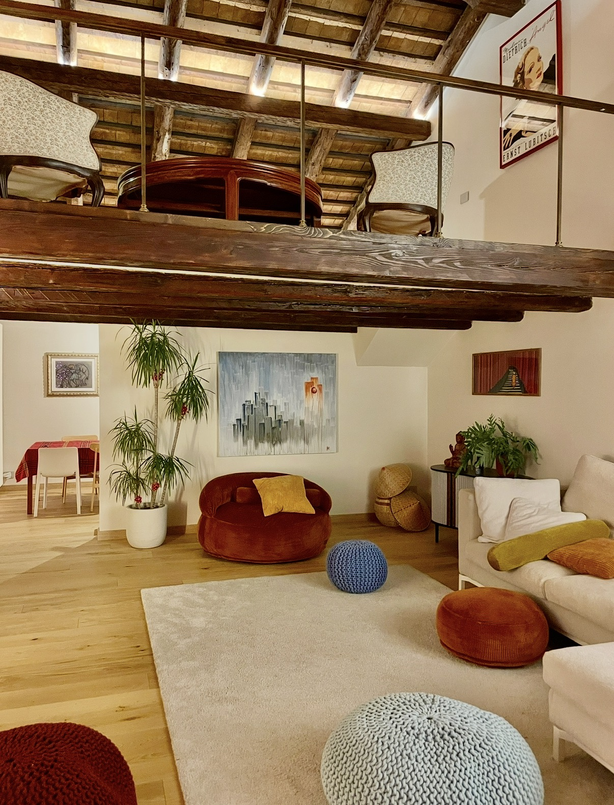
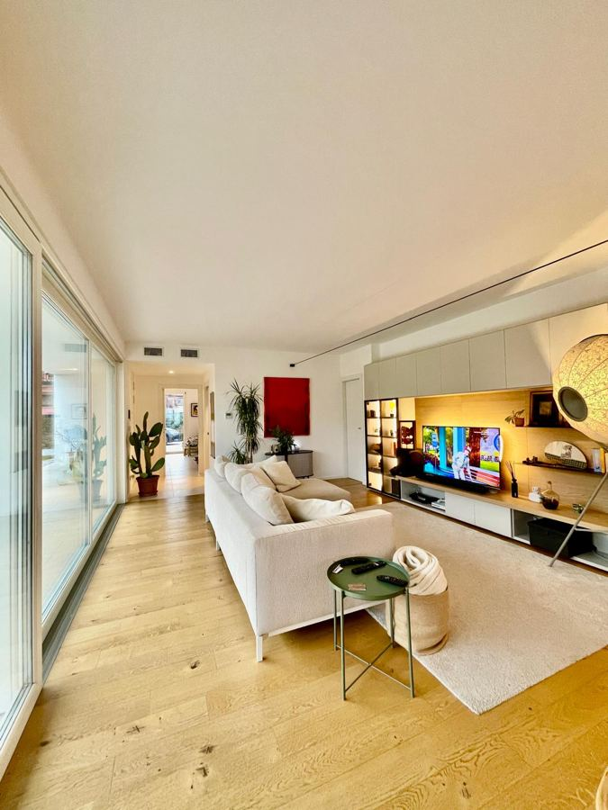
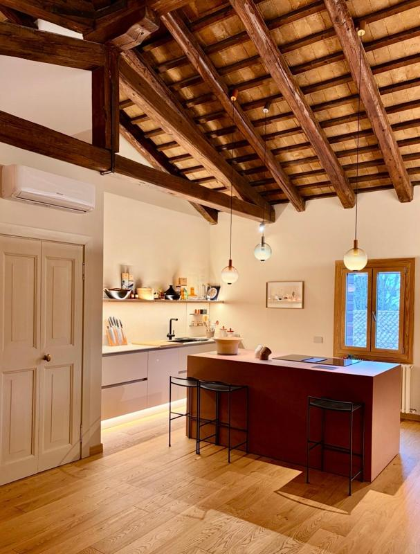
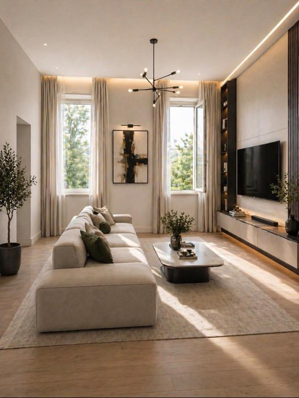

Real Estate Investment & Value Creation
You invest. We create value.
Seleziono immobili di pregio, li ristrutturo e li arredo al miglior prezzo disponibile, pronti per una rivendita di qualità, senza che l'investitore debba seguire nulla in prima persona.
Sono un imprenditore con base a Treviso. Per dodici anni ho fondato e guidato un'azienda tecnologica, portandola a operare in decine di città italiane e a generare oltre venti milioni di euro di transato annuo. Prima ancora ho lavorato nell'export e nella gestione commerciale nel settore dell'arredo e del design.
Oggi metto la stessa disciplina operativa e la stessa capacità di seguire un progetto dall'inizio alla fine al servizio di chi vuole investire in immobili di pregio, senza dover costruire da zero un team dedicato o seguire personalmente cantieri e agenzie.
Non gestisco un fondo e non raccolgo capitale in forma collettiva. Lavoro su singole operazioni, con un mandato chiaro per ogni immobile e piena trasparenza sui numeri, dal prezzo di acquisto fino alla rivendita finale.
Ogni operazione segue lo stesso percorso, pensato per ridurre al minimo il tempo e le decisioni richieste all'investitore.
Individuo immobili di pregio spesso prima che arrivino sul mercato aperto, grazie a una rete di agenzie selezionate che mi mostrano le occasioni migliori in anteprima.
Valuto il potenziale di valorizzazione dell'immobile, definisco il progetto di ristrutturazione con render dedicati e quantifico con precisione i costi previsti.
Faccio personalmente da acquirente per elettrodomestici, cucine e complementi di arredo, con la stessa tecnologia e gli stessi brand che si trovano in negozio, tra cui Veneta Cucine, ma al prezzo più conveniente disponibile online in quel momento, monitorando le offerte fino a trovare quella giusta.
Coordino geometri, imprese e fornitori, con sopralluoghi regolari e un rendiconto costante, così l'investitore resta informato senza dover intervenire.
Gestisco la vendita dell'immobile ristrutturato e arredato, e chiudo l'operazione con un rendiconto chiaro di costi, tempi e risultato ottenuto.
Ogni immobile viene rifinito con cucine, bagni e complementi scelti personalmente, con lo stesso occhio che metterei nella mia casa. Qui sotto alcuni esempi dei progetti seguiti, prima e dopo l'intervento.

Prima
RenderRender di progetto realizzato sull'appartamento allo stato grezzo qui a sinistra, per mostrare il livello di risultato realisticamente raggiungibile.

Prima
DopoRifacimento completo della cucina con Veneta Cucine, travi a vista valorizzate e nuovi arredi su misura.

Prima
DopoRecupero del sottotetto con soppalco a vista, travi originali valorizzate e arredo curato nei dettagli.
Ogni progetto ha una sua storia, dal punto di partenza alle scelte fatte in corso d'opera. Apri una scheda per vedere il percorso completo, con le foto del prima e del dopo.

Da cantiere grezzo a casa pronta: acquisto a 550.000 euro, rivendita a 920.000 euro.
Guarda il progetto
Da appartamento anni ottanta a spazio luminoso e moderno, nel rispetto della villa storica.
Guarda il progetto
Cantiere in corso: appartamento in condominio con zona esterna privata, qui con foto del prima e render del progetto finale.
Guarda il progettoOgni immobile fa storia a sé, ma questi due esempi danno un'idea concreta dell'ordine di grandezza dei margini possibili su un'operazione di pregio ben condotta.
Campagna trevigiana, recupero con mantenimento degli elementi architettonici originali
Ristrutturazione completa degli interni, giardino privato di pertinenza
Valori indicativi calcolati sul solo capitale impiegato in acquisto e lavori, al lordo di imposte, oneri accessori e della mia remunerazione. Esempi a scopo illustrativo, non costituiscono una promessa di rendimento.
Per chi ha già un portafoglio prevalentemente finanziario, un immobile di pregio ben scelto e ben gestito aggiunge un tipo di rendimento diverso, legato a un bene concreto.
Persone che vogliono destinare una parte del proprio capitale al mattone di qualità, senza occuparsi personalmente di ricerca, cantiere o vendita.
Strutture che gestiscono patrimoni familiari e cercano un partner operativo affidabile per la componente immobiliare.
Realtà che vogliono offrire ai propri clienti anche l'accesso a operazioni immobiliari, oltre ai tradizionali strumenti finanziari.
Raccontami il capitale che vorresti destinare al mattone e il tipo di operazione che stai valutando. Rispondo personalmente a ogni richiesta.